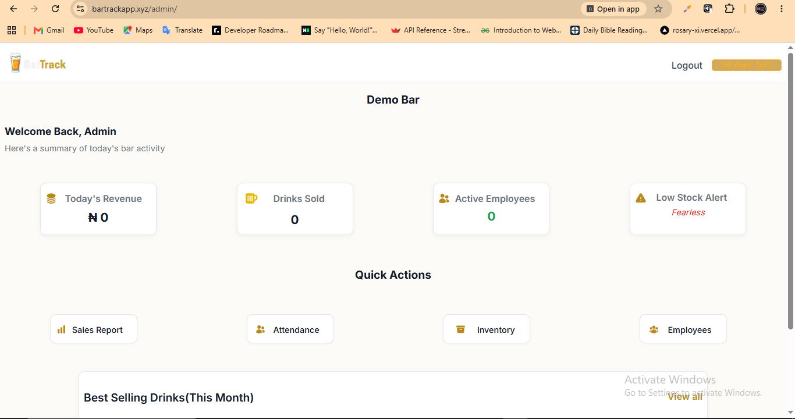

FULL-STACK WEB APPLICATION · SAAS
BarTrack
BarTrack is a web-based bar management application designed to help bar owners manage inventory, sales, employee attendance and day-to-day operations from one platform.
I independently designed, developed and deployed the application, handling its database architecture, authentication, role-based permissions, inventory workflows and sales logic.
Key Features
Inventory Management
Track drinks across bottles, packs, cartons and crates.
Sales Tracking
Record sales and automatically update available stock.
Role-Based Access
Separate permissions for different operational roles.
Employee Attendance
Manage employee clock-in and clock-out activities.